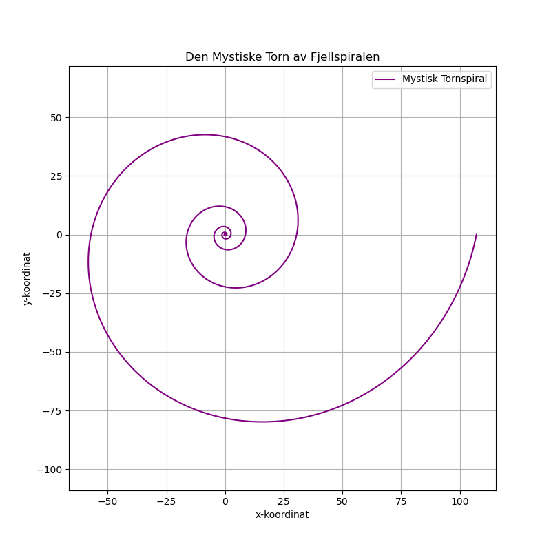

Dagens dikt
###
I et fjell bor en mystisk torn,
Skjult i krystaller, der natur er form.
Hver kant er skarp, hver linje er ren,
Et puslespill av vinkler i harmoni igjen.
La oss lage en spiral som vokser fra stein,
Hver rotasjon tar oss dypere i grunnen, alene.
En form som reflekteres i poesien vi sier,
Grafens dans er diktets begjær.
###

Kode
import numpy as np
import matplotlib.pyplot as plt
# Definere diktets matematiske representasjon: En geometrisk spiral
def mystisk_spiral(a, b, n_rotasjoner, n_punkter):
"""
Lager en logaritmisk spiral basert på diktets metafor.
a og b kontrollerer formen på spiralen, n_rotasjoner antall omdreininger,
n_punkter er hvor mange punkter vi plotter.
"""
theta = np.linspace(0, 2 * np.pi * n_rotasjoner, n_punkter)
r = a * np.exp(b * theta)
x = r * np.cos(theta)
y = r * np.sin(theta)
return x, y
# Spiralens parametere basert på diktet
a = 0.2 # Startavstanden fra sentrum
b = 0.2 # Hastigheten spiralen vokser med
n_rotasjoner = 5 # Antall omdreininger
n_punkter = 1000 # Oppløsning
# Generere spiral
x, y = mystisk_spiral(a, b, n_rotasjoner, n_punkter)
# Plotting av spiralen
plt.figure(figsize=(8, 8))
plt.plot(x, y, label="Mystisk Tornspiral", color="purple")
plt.title("Den Mystiske Torn av Fjellspiralen")
plt.xlabel("x-koordinat")
plt.ylabel("y-koordinat")
plt.legend()
plt.grid(True)
plt.axis("equal") # For å sikre at skalaen er riktig proporsjonert
plt.savefig('2025-03-20-20-01-10.png')